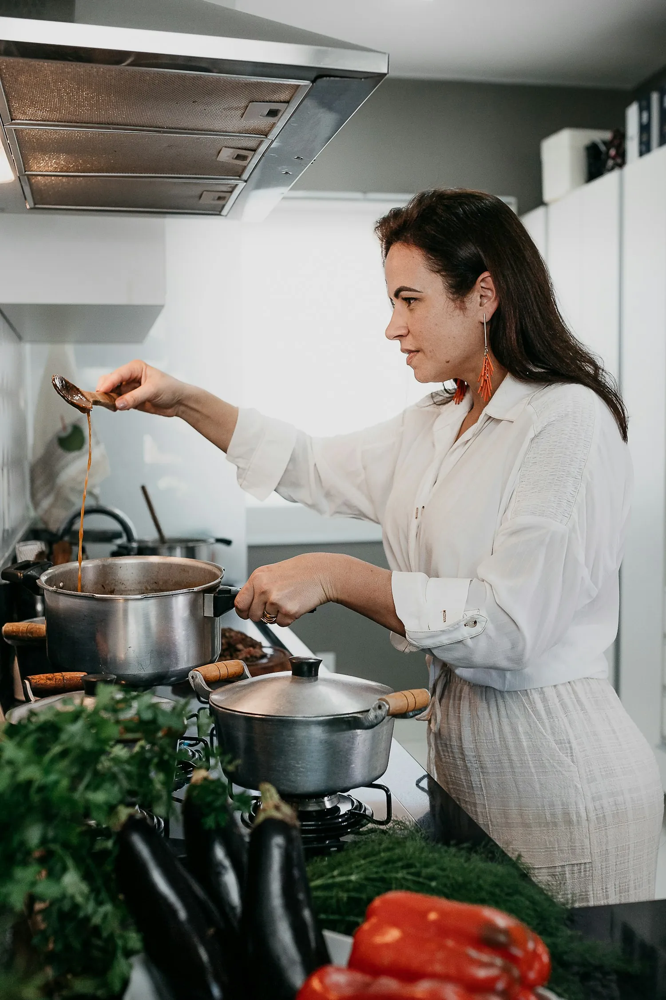
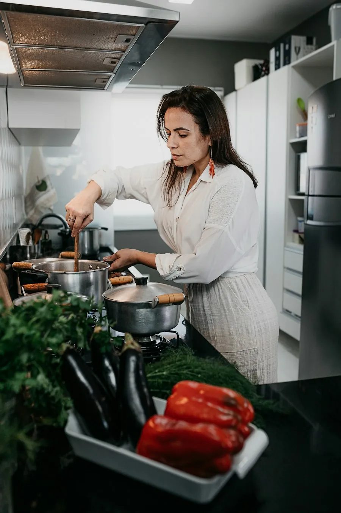
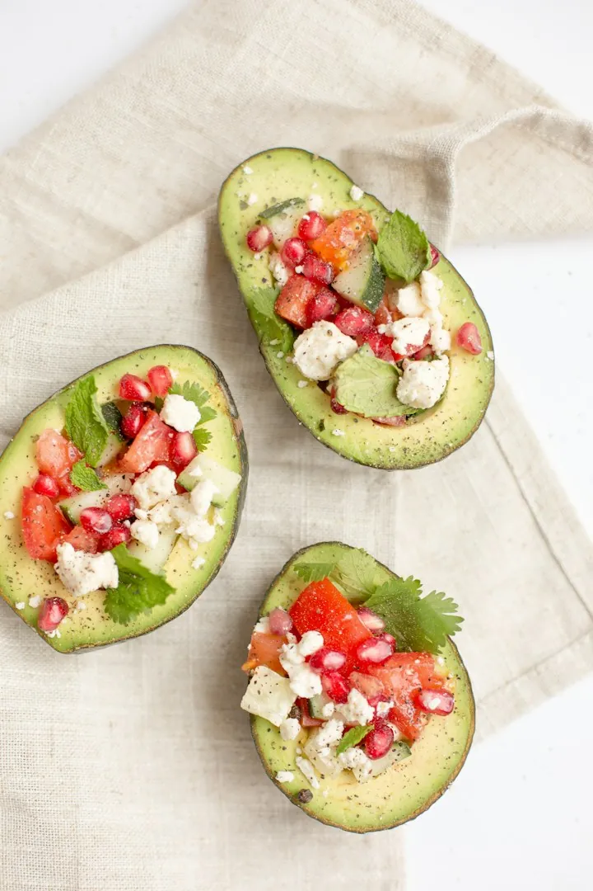
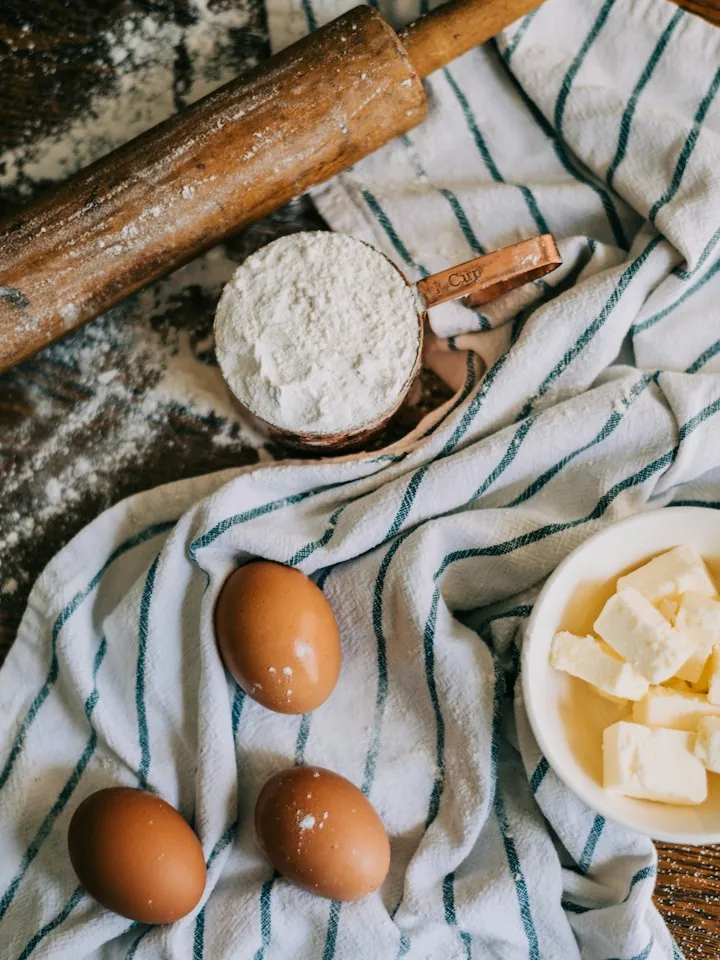
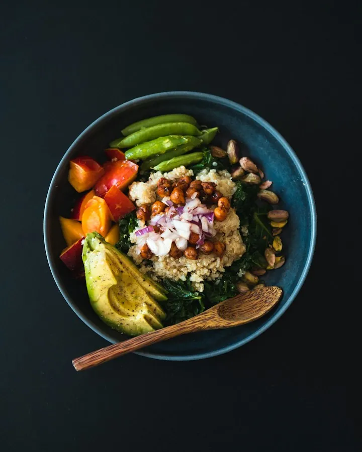
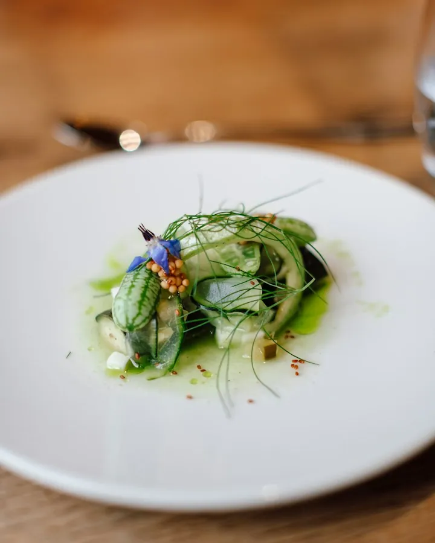
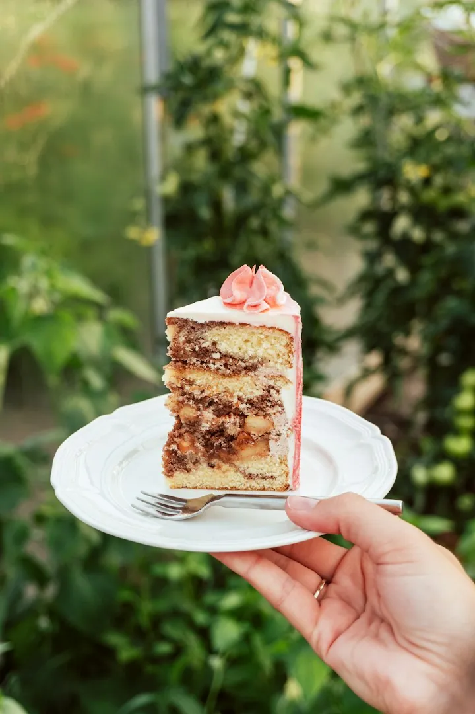
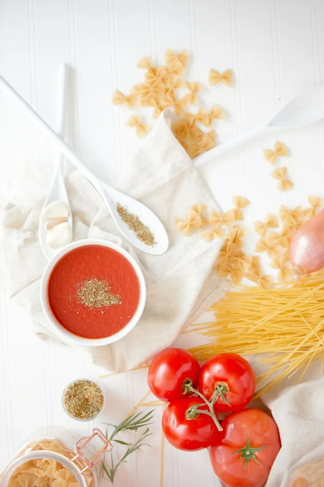
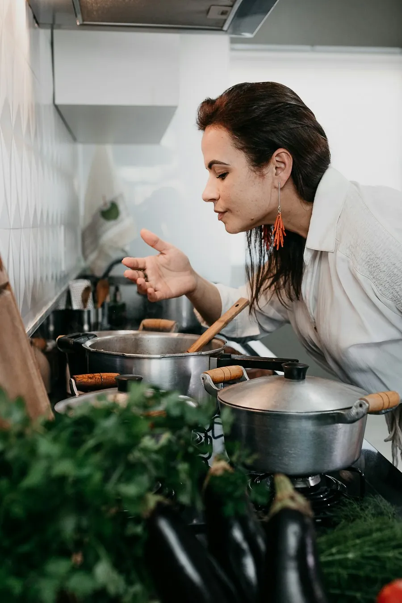

Entradas alcance
- Seguidores no Instagram
- 80 mil
- Alcance mensal
- 180–320 mil
- Público no Brasil
- 90–97%
@bianacozinha · Cidade Exemplo Demonstração
A Bia na Cozinha ensina receitas de 20 minutos para quem chega cansado do trabalho e ainda quer comer bem. Mercado da semana, panela de todo dia e comida de verdade. É ali, no meio do preparo, que a sua marca aparece.
Faixas ilustrativas para um perfil de 80 mil seguidores. No kit real, substituir pelos dados do Instagram Insights.


Sobre a Bia
Quem segue a Bia não quer prato de restaurante. Quer saber o que fazer com o que já tem na geladeira, quanto custa a marmita da semana e qual panela aguenta o dia a dia. Cada vídeo responde uma dessas perguntas, do mercado ao prato.
Por isso a marca não entra como propaganda solta no fim do vídeo. Ela entra no preparo: é o arroz que vai na panela, o tempero que muda o molho, a frigideira que não gruda.
Faixas de exemplo · Demonstração
Demonstração. São faixas ilustrativas, coerentes com um perfil de 80 mil seguidores. No mídia kit real, substituir pelos dados do Instagram Insights dos últimos 30 dias e anexar os prints na proposta.
Faixas de exemplo
Gente que cozinha para a família de 2 a 4 pessoas, faz mercado uma vez por semana e quer acertar na primeira tentativa.
Entre 20% e 30% de homens, a maioria cozinhando a marmita da semana.
Faixas ilustrativas. No kit real, os percentuais saem de Instagram Insights, aba Público.
O que dá para fazer juntos

Ingrediente em destaque
Uma receita pensada em volta do seu ingrediente, com o nome dele no passo a passo e na legenda.

Teste de utensílio
Panela, forma ou eletro usados numa semana de receitas, com opinião sincera sobre o que funciona.

Receita patrocinada
Reel, receita escrita na legenda e Stories de bastidor contando por que o produto entrou.

Tutorial rápido
Stories curtos com dica de preparo, enquete e link direto para comprar ou se inscrever.

Série de receitas
Carrossel feito para salvar, com três jeitos de usar o mesmo produto ao longo da semana.

Campanha sazonal
Quatro semanas de conteúdo em volta de uma data, com Reels, carrossel e Stories.
Exemplos de perfis de marcas — Demonstração
Mercado de bairro, marca regional e curso de culinária: é para esse tipo de parceiro que um perfil de 80 mil seguidores rende mais. Nomes fictícios.
Cesta da semana virando três jantares diferentes.
Uma semana de receitas com a mesma frigideira.
O tempero no passo a passo do arroz de forno.
Série "marmita da semana" com os grãos da marca.
Bolo de pote para vender, com os ingredientes dela.
Tutorial rápido nos Stories com link para a aula gratuita.
Textos ilustrativos
“A receita parecia feita na casa de quem assiste. O produto entrou no preparo, não no fim do vídeo.”
“Ela testou a panela por uma semana antes de gravar e falou com sinceridade onde ela vai bem.”
“Briefing entendido de primeira, roteiro aprovado em um dia e entrega no prazo combinado.”
Escolha os formatos. A composição da campanha aparece ao lado, com cronograma, rendimento estimado e valor de referência. Nada é cobrado aqui: a Bia responde com a proposta fechada.

Resposta em até 1 dia útil. Para data comemorativa, chame com 3 semanas de antecedência.
contato@bianacozinha.com.br (e-mail de exemplo)